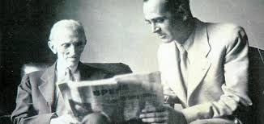

Nikola Tesla (/ˈtɛslə/;[2] Serbo-Croatian: [nǐkola têsla]; Serbian Cyrillic: Никола Тесла; 10 July 1856 – 7 January 1943) was a Serbian American[3][4][5] inventor, electrical engineer, mechanical engineer, physicist, and futurist who is best known for his contributions to the design of the modern alternating current (AC) electricity supply system.[6]
Born and raised in the Austrian Empire, Tesla received an advanced education in engineering and physics in the 1870s and gained practical experience in the early 1880s working in telephony and at Continental Edison in the new electric power industry. He emigrated to the United States in 1884, where he would become a naturalized citizen. He worked for a short time at the Edison Machine Works in New York City before he struck out on his own. With the help of partners to finance and market his ideas, Tesla set up laboratories and companies in New York to develop a range of electrical and mechanical devices. His alternating current (AC) induction motor and related polyphase AC patents, licensed by Westinghouse Electric in 1888, earned him a considerable amount of money and became the cornerstone of the polyphase system which that company would eventually market.
Working at Edison
n 1882, Tivadar Puskás got Tesla another job in Paris with the Continental Edison Company.[38] Tesla began working in what was then a brand new industry, installing indoor incandescent lighting citywide in the form of an electric power utility. The company had several subdivisions and Tesla worked at the Société Electrique Edison, the division in the Ivry-sur-Seine suburb of Paris in charge of installing the lighting system. There he gained a great deal of practical experience in electrical engineering. Management took notice of his advanced knowledge in engineering and physics and soon had him designing and building improved versions of generating dynamos and motors.[39] They also sent him on to troubleshoot engineering problems at other Edison utilities being built around France and in Germany.
Tesla Electric Light & Manufacturing

oon after leaving the Edison company, Tesla was working on patenting an arc lighting system,[57] possibly the same one he had developed at Edison.[43] In March 1885, he met with patent attorney Lemuel W. Serrell, the same attorney used by Edison, to obtain help with submitting the patents.[57] Serrell introduced Tesla to two businessmen, Robert Lane and Benjamin Vail, who agreed to finance an arc lighting manufacturing and utility company in Tesla's name, the Tesla Electric Light & Manufacturing.[58] Tesla worked for the rest of the year obtaining the patents that included an improved DC generator, the first patents issued to Tesla in the US, and building and installing the system in Rahway, New Jersey[59] Tesla's new system gained notice in the technical press, which commented on its advanced features.
The investors showed little interest in Tesla's ideas for new types of alternating current motors and electrical transmission equipment. After the utility was up and running in 1886, they decided that the manufacturing side of the business was too competitive and opted to simply run an electric utility.[60] They formed a new utility company, abandoning Tesla's company and leaving the inventor penniless.[60] Tesla even lost control of the patents he had generated, since he had assigned them to the company in exchange for stock.[60] He had to work at various electrical repair jobs and as a ditch digger for $2 per day.
Two cottages in the stable yard at Bletchley Park. Turing worked here in 1939 and 1940, before moving to Hut
On 4 September 1939, the day after the UK declared war on Germany, Turing reported to Bletchley Park, the wartime station of GC&CS.[61] Specifying the bombe was the first of five major cryptanalytical advances that Turing made during the war. The others were: deducing the indicator procedure used by the German navy; developing a statistical procedure for making much more efficient use of the bombes dubbed Banburismus; developing a procedure for working out the cam settings of the wheels of the Lorenz SZ 40/42 (Tunny) dubbed Turingery and, towards the end of the war, the development of a portable secure voice scrambler at Hanslope Park that was codenamed Delilah.
Personal Life
esla worked every day from 9:00 a.m. until 6:00 p.m. or later, with dinner from exactly 8:10 p.m., at Delmonico's restaurant and later the Waldorf-Astoria Hotel. Tesla would telephone his dinner order to the headwaiter, who also could be the only one to serve him. "The meal was required to be ready at eight o'clock ... He dined alone, except on the rare occasions when he would give a dinner to a group to meet his social obligations. Tesla would then resume his work, often until 3:00 a.m."[222]
For exercise, Tesla walked between 8 and 10 miles (13 and 16 km) per day. He curled his toes one hundred times for each foot every night, saying that it stimulated his brain cells.[223]
In an interview with newspaper editor Arthur Brisbane, Tesla said that he did not believe in telepathy, stating, "Suppose I made up my mind to murder you," he said, "In a second you would know it. Now, isn't that wonderful? By what process does the mind get at all this?" In the same interview, Tesla said that he believed that all fundamental laws could be reduced to one.
Tesla became a vegetarian in his later years, living on only milk, bread, honey, and vegetable juices
Later, convinced by the advice of his brother and his own solicitor, Turing entered a plea of guilty.The case, Regina v. Turing and Murray, was brought to trial on 31 March 1952.[125] Turing was convicted and given a choice between imprisonment and probation, which would be conditional on his agreement to undergo hormonal treatment designed to reduce libido. He accepted the option of treatment via injections of what was then called stilboestrol (now known as diethylstilbestrol or DES), a synthetic oestrogen; this treatment was continued for the course of one year. The treatment rendered Turing impotent and caused gynaecomastia,[126] fulfilling in the literal sense Turing's prediction that "no doubt I shall emerge from it all a different man, but quite who I've not found out".[127][128] Murray was given a conditional discharge.